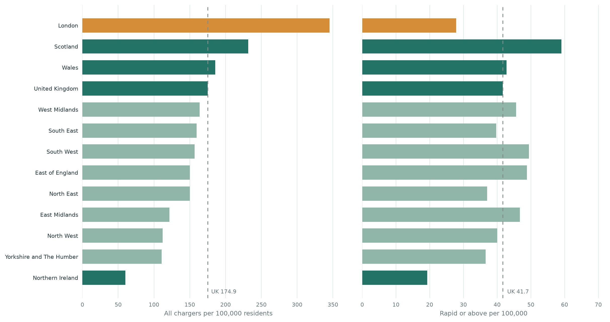
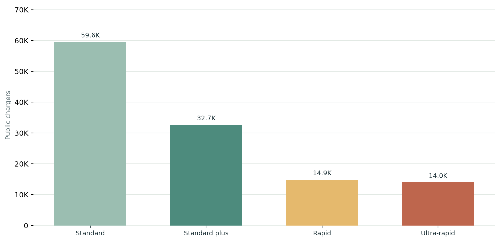
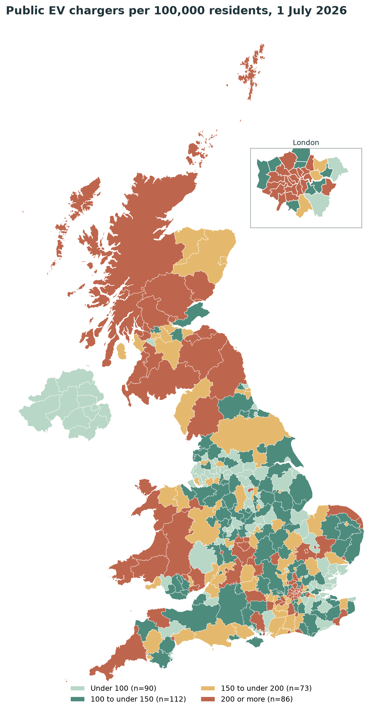
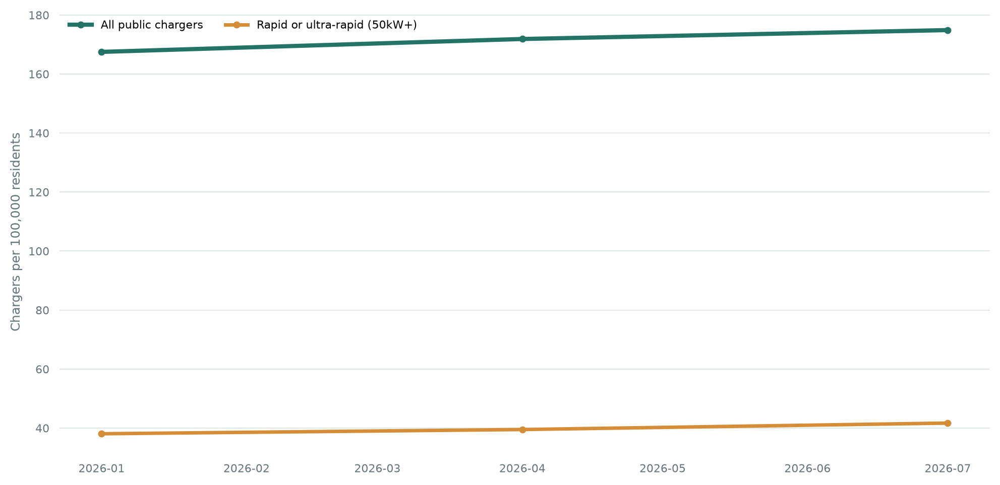

Where the UK plugs in
A larger public charging network—with important differences in reach and speed.
On 1 July 2026, the UK had 121,171 public electric-vehicle chargers, or 174.9 per 100,000 residents. Of those, 28,887 were rated at 50kW or above. These national figures are a useful starting point, but they conceal substantial differences between regions and local authorities.
This article presents the main findings from the full interactive report, which includes a local-authority explorer and downloadable data.
More chargers does not always mean faster charging
London had the highest total provision of the regions shown, at 345.1 chargers per 100,000 people. Its rapid-and-above rate was 27.9 per 100,000. Scotland had 231.6 chargers per 100,000 overall, but a higher rapid-and-above rate of 59.1. The mix matters: a count of plugs alone cannot describe how useful the network is for a particular journey.

Most chargers were in the standard power band
DfT groups public chargers by power: standard (3kW to under 8kW), standard plus, rapid (50kW to under 150kW), and ultra-rapid (150kW and above). Almost half of the 121,171 chargers were standard. The power band is another reason that headline totals should be read alongside the type and location of charging available.

Local coverage varies across all 361 authorities
The July rate map groups authorities into four descriptive bands: 90 were under 100 chargers per 100,000 residents, 112 were from 100 to under 150, 73 were from 150 to under 200, and 86 were at 200 or more. These are comparison bands, not DfT categories.

A short new series, not a long-term trend
The UK per-capita rates moved upward across the three available readings from January to July 2026. Three quarters are too few to establish a long-term trend, and the series should not be joined to older counts as if the measures were identical.

There is a specific comparison caveat for the latest quarter. In June 2026, one operator removed about 1,270 private-access chargers that had been incorrectly reported as public. DfT says this may affect comparisons between April and July. A falling local count should not automatically be interpreted as physical chargers being removed.
Coverage is not the same as access
Chargers per 100,000 residents helps compare places with different population sizes. It does not show how evenly chargers are distributed within an area, whether they are available or working, what they cost, or how many drivers use them. City-centre locations may serve commuters and visitors as well as residents. The rate is a broad coverage indicator, not a measure of any individual driver's access.
Sources and method
The analysis uses the Department for Transport's July 2026 public EV charger tables. Local-authority rates use DfT's published population-adjusted estimates, based on ONS-sourced boundaries and mid-year 2024 population estimates. The 361 authority records sum to the DfT totals of 121,171 chargers and 28,887 chargers rated 50kW or above. DfT labels this release official statistics in development.
Explore the full report and download the data · DfT statistics and commentary · DfT data tables
The charger statistics are reused under the Open Government Licence v3.0. Independent analysis by Kathryn Hopkins.